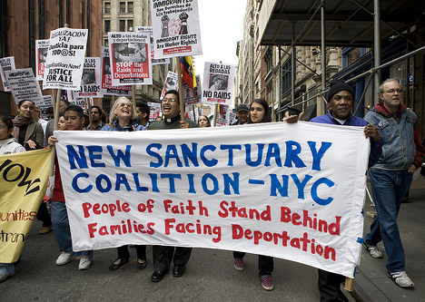

Let us help with your paperwork, answer any questions, or refer you to legal/social services agencies. Everything is 100% free and confidential.
Vamos a ayudarle con sus documentos , contestar alguna pregunta , o referirlo a agencias legales / sociales de servicios. Todo es 100% gratis y confidencial.
让我们帮你处理移民文件，回答任何问题，或帮助你找到法律/社会服务机构。我们的服务是100％免费和保密的。
|
Detention/Deportation |
Family/Relative |
Green Card/Citizenship |
 Asylum/Refugee |
Business/Employment |
 And More |